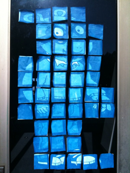
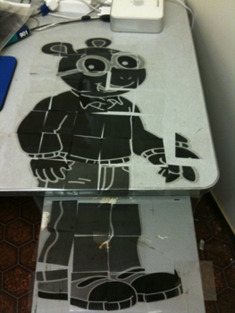
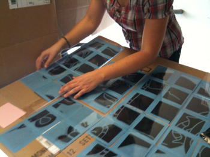
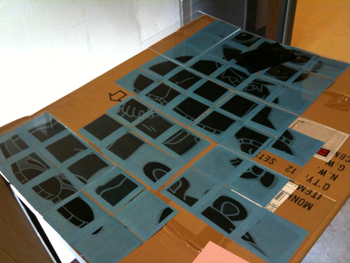
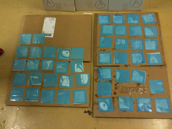

Time: about two days
What you need:
• Transparencies
• 4”x4” Sunprints (about two to three packs should do it)
• Large acrylics (especially if it’s windy)
• Access to a computer and a printer
The idea behind the project was to use small (4”x4”) Sunprint papers to create a larger image that you could see from a distance, but not up close. I chose Arthur because of the relatively simple lines in his drawing, as well as for sentimental reasons (Arthur was my favorite cartoon when I was little). Once I found a picture that was large enough I opened it up in Paint. I spent some time fooling around with Photoshop as well, but I think all the things you need done can be accomplished in Paint just as easily—more easily, in my case.

In Paint, I changed the color scheme to grayscale and inverted the colors. This step is important because Sunprinting is pretty much like developing a photograph—you need a negative to start with. The grayscale, obviously, is because you’ll only get shades of blue in your end result.
Essentially what you have to do at this point is divide the image into squares that will fit onto the Sunprint papers, and print them out individually. I was a bit unsure how to divide the picture, but after fiddling around with Paint I found a pretty simple way to create a grid and I ended up with about 48 squares. If you’re extra careful, you can get the image to divide into squares exactly, but if not, it’s okay to stretch out the sections so that they’re squares. It distorts the image, but in the end you get the same result.

The next step was to reconstruct the image to make sure I had all the parts and knew where they went. These parts then went onto a large piece of cardboard under Sunprint papers. Unfortunately for me, something had gone wrong with my calculations so there was extra space around the images! Oops. But instead of reprinting, I decided to go with it and leave blank spaces between the parts of the image, which I think turned out better in the end.

That was when I hit another snag—it was pretty windy outside and the transparencies wouldn’t stay on the Sunprint papers! To solve that problem, I took some larger acrylics and placed them over several Sunprints so that they were all covered.
I left the Sunprints out in the sun until they were a pale blue, then brought them into the shade to wash and place on the cardboard to dry, which was an overnight process. When I came back, the Sunprints were a rich dark blue and the darkest parts of the Sunprint negatives were white! Everything had transferred perfectly, even if some of them were a little bit crooked.

At this point I placed all of the papers under heavy books for a few more hours. Often the Sunprints come out wrinkled from the water, but if you leave them under something heavy, they’ll straighten out. Finally, I put them all back together—and found a few that were backward! This can happen, and it’s no big deal. Just take the original transparencies and redo them in the correct direction. When those were ready, I put the image all together—and it looked great!
A few reminders:
• Make sure to keep the order of the parts in your mind or keep the grid picture around. You’ll need it if you end up with a few squares that have a small image in the corner and you can’t tell exactly where they go.
• This project is more time-consuming than most, so it’s best for older kids who have the patience to wait and let the images develop and put them back together.
• The more careful you are, the better it will all turn out.
• It’s best to do this on a sunny, windless day, but the acrylics solve the wind problem very well.
• Be sure to cut along the lines of the squares, or you’ll end up with excess transparency that makes putting the image back together difficult.
• Have fun!
-Jasmine Mark
Tags: Craft project, transparency